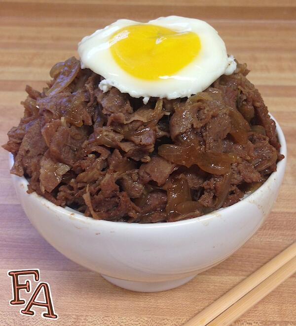

Mega Beef Bowl (Gyūdon)

A dish inspired by the game Persona 4 in which the Mega Beef Bowl is served in Chinese Diner Aiya on a rainy setting, and
inspired by a Japanese dish called Gyūdon. It consists of a bowl of rice with beef and onion simmered in
a mildly sweet sauce flavored with dashi, soy sauce and mirin, topped with a fresh egg on top. As stated in the game,
the Mega Beef Bowl is so huge that the character 'suspects that it's a portal to the Meat Dimension'. You must have Understanding
of your limits, Knowledge to control your pace, Courage to face this unrelenting tide of beef, and the Diligence
to persevere against the Mega Beef Bowl challenge! Even if you aren't able to complete the challenge and get the achievement, it will
raise all of your characters stats afterwards, making it a win-win situation, even though you still have to pay for it.
This recipe will be a smaller version of the Mega Beef Bowl, but if you're a heavy eater or planning to serve it to
a huge group, you can watch this video here. For now, this will be a regular sized
Gyūdon recipe that is enough to satiate your hunger in a respectful manner while giving you a further Understanding of how insane the character in
Persona 4 could dominate the Mega Beef Bowl challenge in one full swoop.
Ingredients
- 2 cups water
- 2 teaspoons Dashi Powder
- 1 tablespoon Aji-Mirin Sweet Cooking Rice Seasoning
- 1 tablespoon sugar
- 2 tablespoons soy sauce
- 1 teaspoon Worcestershire sauce (optional)
- 1/2 teaspoon fresh ginger (optional)
- 1/2 teaspoon minced garlic (optional)
- 2 onions, sliced
- 4 Steak-EZE thin sliced beef steaks (or very thinly sliced beef)
- 2 teaspoons cornstarch
- fluffy white rice
- 1 small egg, poached
- A good amount of Diligence, Courage, Understanding, and Knowledge
Directions
- In a large pot bring the 2 cups of water to a boil & add the dashi powder. Stir until dissolved & then add the mirin, sugar, soy sauce,
onion slices, & optional Worcestershire, ginger, & garlic. Stir & continue to boil gently until the onions are caramelized.
Reduce heat to medium.
- Add the Steak-EZE steaks to the onions & sauce. Push the meat into the sauce & turn over occasionally to cook fully for a few minutes.
Break the meat apart with your spoon (or two forks) & mix well with the onions & sauce.
- Once the meat is cooked & incorporated, remove the meat & onions from the sauce into a large bowl using a slotted spoon or tongs. Leave the sauce in the pot.
Using a measuring cup (or other small cup) scoop out a small amount of sauce & dissolve the cornstarch into it. Pour the cornstarch mixture into the pot & stir.
Bring the sauce back to a boil & let it cook until it thickens. Reduce the heat to a low simmer to let it thicken more.
- At this point you can put the onions & meat back into the pot with the sauce or pour the sauce into the bowl with the onions & meat. Serve mounded on top of fluffy
rice with the optional poached egg added last. And make sure you have enough Diligence, Understanding, Knowledge, and Courage to devour the dish in its entirety!